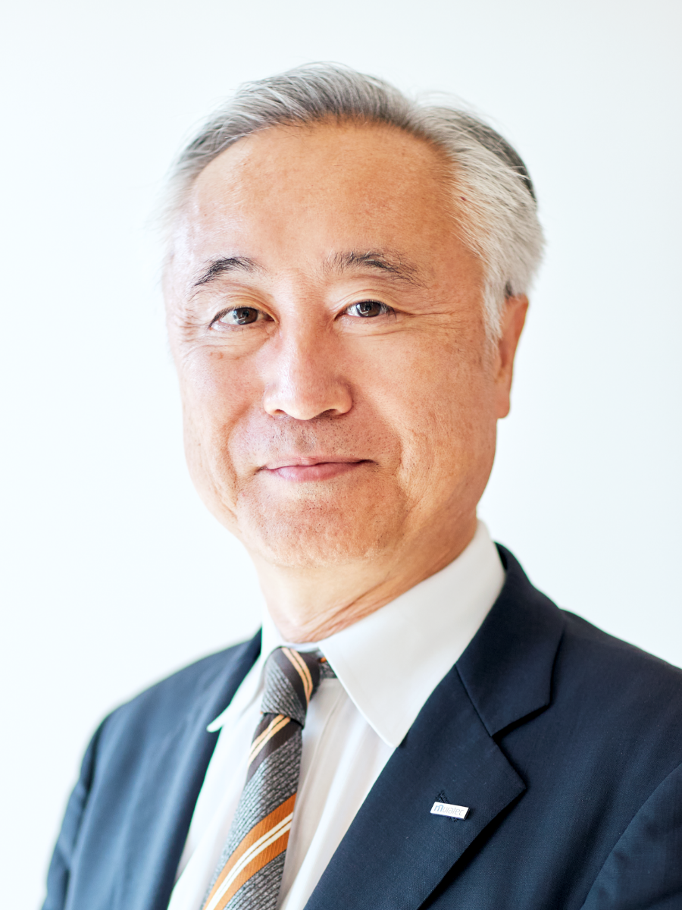

1989 年から全国女子駅伝に協賛してきた村田機械と
同年の大会にも参加していた元マラソンランナーの有森裕子さん。
それぞれが超えてきた「分岐点」を振り返りながら
当時の想いや未来への展望などを語っていただきました。

-
元マラソンランナー
有森裕子1966年12月17日生まれ、岡山県出身。日本体育大学を卒業後、リクルート入社。 女子マラソン選手として1992年バルセロナオリンピックで銀メダル、1996年アトランタオリンピックでは銅メダル獲得。1998年ＮＰＯ法人ハート・オブ・ゴールド設立、代表理事就任。2007年にプロマラソンランナー引退。現在では、国際オリンピック委員会（IOC）Olympism365委員会委員、ワールドアスレティックス（WA）カウンシルメンバー、日本陸上競技連盟会長、大学スポーツ協会副会長など、幅広い分野でスポーツ振興に関わっている。2010年IOC女性スポーツ賞を日本人として初めて受賞。
Instagram：@yuko_arimori_official
- 
-
村田機械株式会社 代表取締役社長
村田大介1961年京都府生まれ。1984年一橋大学経済学部卒業。京セラ株式会社に3年間勤務後、1987年村田機械株式会社に入社。
1990年スタンフォード大学経営学修士課程修了。繊維機械事業部長、情報機器事業部長、物流システム事業部長を経て、2003年同社代表取締役社長に就任。
日本繊維機械協会 会長、日本物流システム機器協会 副会長、ビジネス機械・情報システム産業協会 監事、京都工業会 理事、SEMI International Board Member.
本日は、よろしくお願いいたします。まずは村田機械についてご紹介いただけますでしょうか。
村田：村田機械は1935年に京都で創業しました。祖業は京都の伝統産業・西陣織に関連するジャカード機の製造販売で、そこからつながる繊維機械事業が今でも主力事業の1つです。繊維機械分野では世界の紡績業に大きな影響を与えた製品があり、他の金属加工、搬送システム、情報機器の事業でも同様に、市場や社会の常識を変える技術革新を起こしてきました。
ムラテックの様々な事業を紹介
繊維機械が使われる「紡績」の材料を手に取る有森さん
空気で糸をつなぐスプライサー
世界中の紡績工場で働く自動ワインダー
村田機械は、1989年（平成元年）から皇后盃 全国女子駅伝に協賛されていますが、
協賛当初から現在まで、どんな思いで協賛されていきたのでしょうか？
村田：これまで36回協賛を継続して来ましたが、実は会社の業績悪化で迷ったこともありました。しかし先代社長の判断で継続。スポーツを応援したいという強い思いを今日まで途切れることなくつなげてくることができました。有森さんは、全国女子駅伝がスタートした1983年の第1回大会から高校生選手として参加されていましたね。
有森：全国女子駅伝は私が高校に入学した年に始まったのですが、実は3年連続で選手に選ばれながら、3年連続で補欠という苦い思い出があります。高校から陸上部に入った私は、特別足の速い選手ではなかったので、1年生の時は補欠でも京都に行けることを喜んでいましたが、さすがに2年目も補欠になったのは堪えましたね。
そんな失意の中で開会式を迎えた時に、シンガーソングライターの高石ともやさんが登壇されて「ここまで一生懸命やってきたのは、あなた自身なのだから、まずはここに来られた自分をほめてあげよう。それがいちばん大事なこと」と挨拶をされたんです。
この言葉を聞いた私は、一人で号泣していました。ただ、今の自分に対してはまだ言えない言葉だとも思ったので、いつか胸をはって言える日がくるまで大切にしようと心に決めました。
村田：それが有名な「自分で自分をほめたい」という名言につながったわけですね。
有森：そうですね。あの言葉を聞かなかったら、「絶対強い選手になってやる」という想いで粘り強く競技人生を続けることはできなかったと思います。大学1年生の時にようやく全国女子駅伝を選手として走ることができ、村田機械さんが初協賛された89年の大会では、おかげさまで好成績を残すこともできました。粘って粘って継続してきて本当によかったと思えた大会でしたね。あの時スタートラインで見た「村田機械」のロゴは今でも鮮明に覚えています。この大会が私の原点であり、補欠という悔しさや辛さがあったからこそ、今の自分があると言っても過言ではありません。
村田機械も、これまでさまざまな製品を開発してこられたと思いますが、
「補欠選手のように、すぐに世に出なかったもの」も多くあるのでしょうか？
村田：その通りです。発売に至らなかったもの、世に出しても売れなかったものが山ほどあります。今の有森さんのお話を伺って思ったのは、成功しなかったものはイコール失敗ではないということです。成功しなかったとしても、その経験から何を学び、次の技術へどう活かすのかが大事だと思います。ものごとを失敗にするのか成功にするかは自分次第ですね。
全国女子駅伝は、中学生から社会人までが同じチームで、都道府県の代表として走るというユニークな大会ですが、どのような意義や意味があると思われますか？
有森：中学生から社会人までがひとつのチームになって高め合う、競い合うスタイルは他にないものです。女子の中長距離選手の育成・強化を目的に発足した大会なので、全世代のランナーに切磋琢磨できる機会が与えられるのは、とても素晴らしいことですね。現在、日本の女子長距離ランナーが世界で活躍できている根底には、常に未来を見据えて育成に取り組んできたこの大会の恩恵があると思います。
村田：地域と一体になって開催されているのも非常に意義深いと思います。大会は1月に開催されるので、大雪が降った年もあります。そんな時、大会関係者はもちろん、地域のボランティアの方々や住民の皆さん、夜明け前から必死に除雪作業をしてくださった市の職員の皆さんのおかげで、無事に大会が開催されてランナーたちは襷をつなぐことができました。
次に、村田機械のスローガン「革新の分岐点」についてお聞きしたいのですが、
このスローガンに込めた思いを簡単に教えてください。
村田：社員が一丸となって、真面目にお客さまに尽くし、諦めずに継続する。これが弊社の持ち味なのですが、一方で、過去の先輩たちは突拍子もないイノベーションも生み出してきました。お客さまや世の中を驚かせたい。そんな想いを突き詰めていった結果、これまで数多くの業界やその先の社会をも変える分岐点となるような革新的な製品を生み出してきました。そうした姿勢を忘れないためにも「革新の分岐点」というスローガンを掲げることにしました。
有森：とてもいい言葉ですね。私も振り返ってみると分岐点だったと思えるできごとがいくつかあります。ただ、結果的に分岐点であっても、意図的に何かの選択をしてきたわけではないように思います。「生きているだけで丸儲け」ではありませんが、「とりあえず生きていければいい」という気持ちがベースにあってそのための選択をしているだけで、いい意味で「こうじゃないとダメ」がなく、好き嫌いやこだわりで物事を選別しないというのが私のモットーです。仕事も私にとっては、食べるため、生きていくためのものなので「ライスワーク」と言えるかもしれません。
そういう考えになれると、今できること、しなければいけないことに集中できますし、案外迷わずに全力を尽くせるものです。そして、全力を尽くせば、それなりのものが生まれますし、そこからまた生きていくための何かを生み出していけます。私の人生はその繰り返しでしたね。
村田：迷っている時は八方塞がりになって、何をしていいか分からなくなるものです。でも、必ずどこかに進むべき道はあるんですね。なかなか気付けないものですが、それがちゃんと見えている有森さんはすごいですね。
有森：すごいという程のものではないですが、カンボジアなどの途上国に行った経験も大きいと思います。比較論ではないし、環境も価値観もまったく違いますが、生きているだけで十分恵まれたことだと再認識させられるんです。こんなに恵まれた状態で、何を迷うことがあるんだと。とにかく生きていれば何でもできる。そう思えたら、道は簡単に開くものです。
とは言え、変化の激しい現代ビジネスでは判断に迷う時もあると思います。
そういった時にスローガンは、進むべき道を示す役割を果たしてくれそうですね。
村田：北極星のように、多様な個性が同じ方向へ向かうための指針になると思っています。「革新の分岐点」というスローガンがあることで、変化に翻弄されることなく、迷うことなく進んで行けると思うのです。
有森：分岐点と言っても、すべてはつながっています。それこそ、村田機械さんの祖業である繊維機械の糸のように。変化に応じながら、いろいろな方向へ分岐していったとしても、それは分断されたものではなく、どこまでいってもつながっていると思います。
村田：まさに、その通りだと思います。実は9年前、創業80周年のときには「今をつないで、未来を拓く」というスローガンをつくったんです。「過去からつなげて来たものに無駄なものなんてひとつもないはず。今をつないでいくことで、未来を拓いて行こう」という想いを込めてつくったスローガンです。有森さんのお話を聞いて、改めて間違っていなかったなと思えました。
最後に、未来に向けた展望や、若い人たちへのメッセージをお願いします。
有森：人はいつでも、いつまでも変化していける生き物です、もうダメだと諦める理由なんて、死ぬまでないと思っています。だから、若いランナーたちにはチャレンジを続けてほしいですね。いちばん大事なのは、そういう自分の姿や意思を自分で消さないこと。たとえ、周りにいるすべての人から忘れ去られてしまったとしても、自分が自分の意志を消さずに持ち続ければ、きっと形になるはずです。そういう強い人間、ランナーになってほしいと思います。そんなランナーが増えることで陸上界が盛り上がっていき、より多くの人がスポーツを通して元気になれる世の中になっていけばうれしいです。
村田：現代社会には諸課題が山積しており、否定から入ることも多いと感じています。でも、科学技術のおかげで現代の発展があり、これから先も科学技術によって問題の解決は必ずはかれるはずです。技術が社会を変え、社会が技術を変える。そう信じて一丸となって開発に取り組んでいけば、できないことはありません。有森さんの仰るように諦めず、否定的にならず、自分たちの信念を貫き通せば未来は明るくなると考えています。
有森：若い人には、ぜひ最後まで諦めず走りきってほしいですね。途中でやめてしまったら何も見つかりません。どんな形でもゴールすれば何かしらの結果が出て、それがまた次につながっていきます。全国女子駅伝というチャレンジできる機会をつくっていただけることは、とてもありがたいことです。その機会を活かして、大きく羽ばたいていってほしいと思います。
有森さんが大切に保管されていた、今では貴重な大会記念テレフォンカードを贈呈いただきました。
村田機械が初協賛し、有森さんが初参加した第7回大会から第10回大会までの記念テレフォンカード。